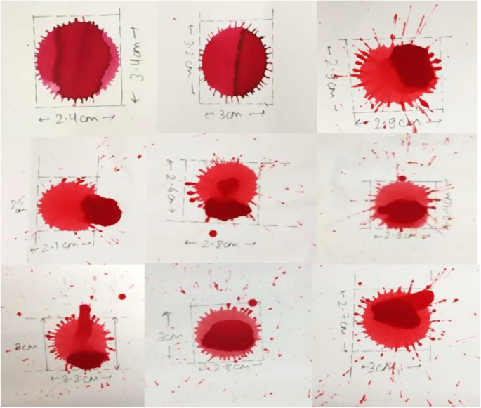

AiCore: Blood Spatter Analysis Detection Using Artificial Intelligence (AI), Augmented Reality (AR), and Computer Vision (CV)
DOWNLOAD
Image Gallery



AiCore is a cutting-edge application that combines Computer Vision (CV) and Augmented Reality (AR) to revolutionize Blood Spatter Analysis for Forensic Science Professionals. We help automate and simulate complex processes to bring new levels of accuracy and efficiency.